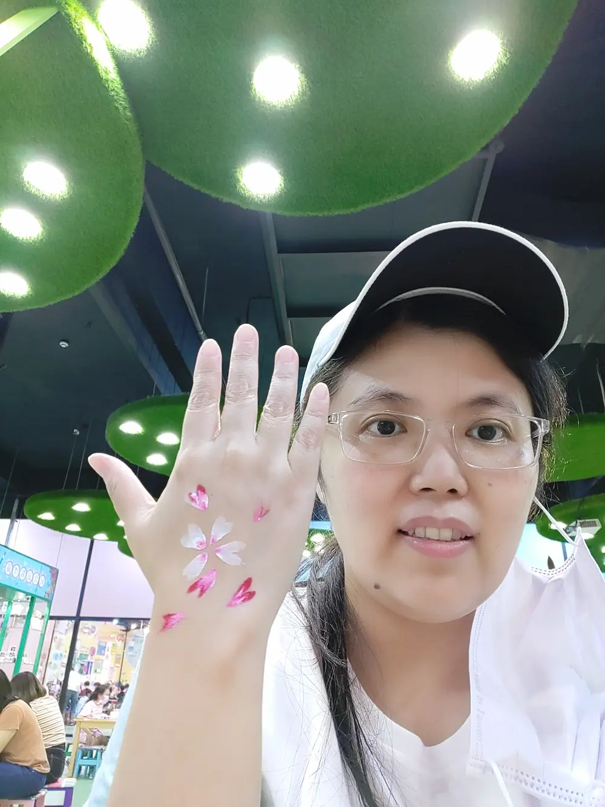

About Me
Hello! My name is Chih Chun Hsiao. It's my Chinese name. I am from Hsinchu, Taiwan. I have been married to my husband for 16 years and we have four children. They are 15, 12, 10, and 6 years old. I am a stay-at-home mom after my first baby was born. When I have free time I like to play the piano, do Yoga, and watch Korean dramas. I am a part-time Chinese-English translator. I serve in the Church as the Primary President of the Zhudong Ward over eight years. I love being with children. They make me feel very comfortable. I also love their simple faith in God and their sweet singing voices.